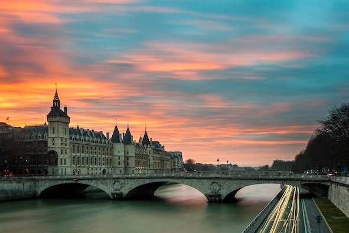

Paris vous fait rêver... mais vous n'avez que quelques jours pour visiter une des capitales les plus fascinantes ? Musées et monuments célèbres, croisières sur la Seine, shopping et « Paris by night » : voici 6 propositions de balades à combiner comme vous le souhaitez, selon vos goûts et vos envies, si vous restez 1, 2 ou 3 jours à Paris.
Les étapes incontournables en une promenade d’une journée. Commencez par un café sur les Champs-Elysées, puis descendez tranquillement à pied jusqu’à la tour Eiffel par l’avenue Marceau en passant devant la fameuse flamme du pont de l’Alma. Du haut de la Tour, c’est une vue imprenable sur tout Paris.
Ensuite, laissez-vous glisser sur la Seine jusqu’à Notre-Dame en prenant l’un des bateaux amarrés juste en bas. Une fois arrivés à la cathédrale et après sa visite, une pause déjeuner s’impose.
Le Louvre est ensuite à une petite demi-heure et vous attend pour un parcours ciblé sur ses plus grands chefs-d’œuvre. En sortant, le jour décline sur la passerelle des Arts, le Pont-Neuf et l’Institut de France.
Traversez la Seine pour rejoindre le métro Odéon qui vous emmène directement sur les contreforts de la butte Montmartre pour profiter d’un panorama exceptionnel sur la ville et ses monuments illuminés dès la tombée de la nuit.
Pour réserver votre road trip cliquez ici